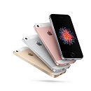

iPod shuffle
iPod nano
iPod classic
iphone SE
Apple TV
Accessories
Download iTunes 10
iTunes Gift Cards
Nike + iPod
(PRODUCT) RED
MobileMe
In-Ear Headphones
Products
iTunes and more
 iPod shuffle
iPod shuffle iPod classic
iPod classic iphone SE
iphone SE Apple TV
Apple TV Accessories
Accessories Download iTunes 10
Download iTunes 10 iTunes Gift Cards
iTunes Gift Cards Nike + iPod
Nike + iPod (PRODUCT) RED
(PRODUCT) RED MobileMe
MobileMe In-Ear Headphones
In-Ear Headphones